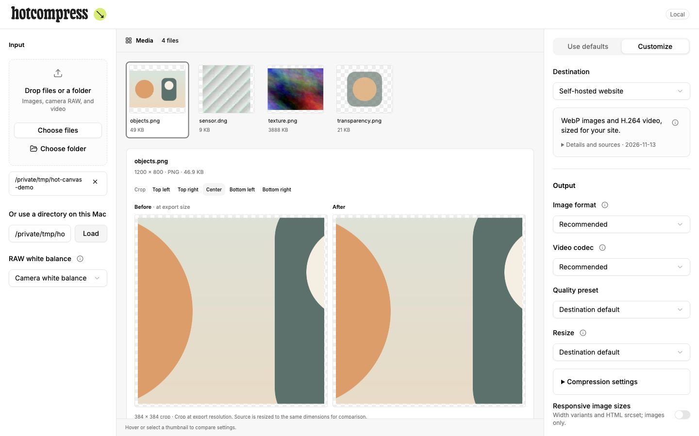

MAC APP · AGENT SKILL · CLI · GITHUB ACTION
Prepare media.
Keep it local.
Compress images, camera RAW and video for websites and sharing. Compare before/after crops, choose a destination, and export a batch. Originals are kept.
Mac app
A native Mac window with the full workbench. Node is included; compression tools are installed separately.
Download for Apple Silicon ↓macOS 14+ · unnotarized developer buildSetup and requirements
- Extract the ZIP and move Hot Compress.app to Applications.
- Install codecs with Homebrew:
brew install imagemagick ffmpeg libraw jpeg-xl - Open the app, choose files or a folder, and compress.
This developer build has an ad-hoc signature, not an Apple Developer ID signature or notarization. macOS security checks may block a downloaded copy. You can also build from source or use the agent skill.
Agent skill
A portable skill with the built engine included. No repository checkout or npm build required.
Download agent skill ↓Node 24 recommended · local codecs requiredInstall the skill
- Install Node and codecs:
brew install node imagemagick ffmpeg libraw jpeg-xl - Extract the ZIP. From the containing folder, run:
node hot-compress/install.mjs - Start a new Codex chat and use
$hot-compress. The installer keeps existing skills intact.
The local workbench
Usage and format support ↗
From a terminal or CI
git clone https://github.com/AlexBloom/hot-compress.git
cd hot-compress
npm ci --ignore-scripts
npm run build
node bin/hot-compress.mjs ./assets --responsiveReusable GitHub Action · Output and platform research · Release notes and checksums
This GitHub Pages site provides downloads and setup instructions. Compression runs in the Mac app, skill or CLI on your computer. It does not upload your media to this website. RAW coverage depends on the installed decoder; animation, HDR processing and video alpha are reported as unsupported.